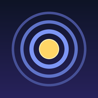

레조넌스
개인용 실행기 · 게임 데이터는 이 기기에만 저장됩니다
홈 화면 앱에서 진행하세요
지금은 Safari 탭으로 열려 있습니다. Safari와 홈 화면 앱은 저장 공간이 서로 달라서, 여기서 설치하면 앱에서 다시 설치해야 합니다.
- 아래쪽 공유 버튼 → 홈 화면에 추가
- 홈 화면에 생긴 레조넌스 아이콘으로 실행
이 브라우저에서는 실행할 수 없습니다
- 설치된 버전
- 확인 중…
- 최신 버전
- 확인 중…
- 저장 공간
- 확인 중…
- 마지막 백업
- 확인 중…
게임 데이터 설치·업데이트
원래 사이트에서 받은 packs.zip을 고르세요. 이미 저장된 팩은 건너뛰니, 중간에 끊겨도 다시 고르면 이어서 설치됩니다.
설치 중에는 화면을 켜 두고 앱을 벗어나지 마세요.
세이브 백업
세이브는 이 앱의 저장소에만 있습니다. 앱을 지우거나 iOS가 데이터를 정리하면 사라지니 가끔 내보내 두세요. 원래 사이트 앱에서 내보낸 백업 파일도 그대로 가져올 수 있습니다.
화면 여백
다이나믹 아일랜드·둥근 모서리에 게임이 가려지지 않도록 가장자리를 비웁니다. 게임 중에도 ⋯ 버튼으로 바꿀 수 있습니다.
고급
버전 정보 파일(release.json)을 못 읽을 때, 원래 사이트의 위치표 JSON 파일을 직접 골라 설치할 수 있습니다.
설치된 게임 데이터를 지웁니다. 세이브는 지우지 않습니다.